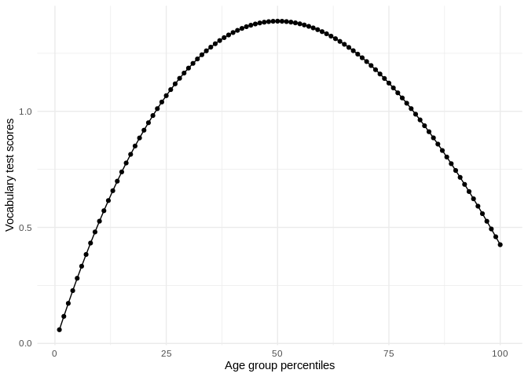

Overview
perccalc is a direct implementation of the theoretical work of Reardon (2011) where it is possible to estimate the difference between two percentiles from an ordered categorical variable. More concretely, by specifying an ordered categorical variable and a continuous variable, this method can estimate differences in the continuous variable between percentiles of the ordered categorical variable. This brings forth a relevant strategy to contrast ordered categorical variables which usually have alternative continuous measures to the percentiles of the continuous measures. Moreover, this opens an avenue for calculating percentile distributions and percentile differences for ordered categorical variables which don’t necessarily have an alternative continuous measure such as job occupation classifications. With this package I introduce two functions that apply the procedure.
The package has two main functions:
-
perc_diff, for calculating percentile differences -
perc_dist, for calculating scores for all percentiles
Usage
To look at a real world example, let’s use the data from the General Social Survey (GSS). This dataset contains information on the responses given by subjects on a vocabulary test together with their age expressed in age groups (such as 30-39, 40-49, etc…). We’re interested in calculating the difference in vocabulary test scores between the old and young respondents.
In many scenarios, we could calculate the difference between these groups in their vocabulary tests by estimating the mean difference between two age groups (for example, ages 20-29 versus ages 60-69). However, in many other settings we’re specifically interested in the difference of vocabulary tests by the percentiles of the age variable. In particular, this could be of interest for studies looking to contrast their results to other studies which have age as a continuous variable. In our example, age is a categorical variable so we cannot calculate percentiles. The method implemented in this package introduces a strategy for calculating percentiles from ordered categories.
Let’s load our packages of interest and limit the GSS data to the year
library(perccalc)
library(dplyr)
library(ggplot2)
library(carData)
set.seed(213141)
data("GSSvocab")
gss <-
as_tibble(GSSvocab) %>%
filter(year == "1978") %>%
mutate(weight = sample(1:3, size = nrow(.), replace = TRUE, prob = c(0.1, 0.5, 0.4)),
ageGroup = factor(ageGroup, ordered = TRUE)) %>%
select(ageGroup, vocab, weight)Note that the categorical variable (ageGroup) has to be an ordered factor (this is a requirement of both functions). Moving to the example, perc_diff calculates the difference in the continuous variable by the percentiles of the ordered categorical variable. In our example, this would the question of what’s the difference in vocabulary test scores between the 90th and 10th percentile of age groups?
It’s about .21 points with a standard error of .39 points. In addittion, you can optionally add weights with the weights argument.
perc_diff(gss, ageGroup, vocab, percentiles = c(90, 10), weights = weight)
#> difference se
#> 0.1760728 0.3775078On the other hand, the perc_dist (short for percentile distribution) allows you to estimate the score for every percentile and not limit the analysis to only the difference between two percentiles.
perc_dist <- perc_dist(gss, ageGroup, vocab)
perc_dist
#> # A tibble: 100 x 3
#> percentile estimate std.error
#> <int> <dbl> <dbl>
#> 1 1 0.0590 0.0588
#> 2 2 0.117 0.115
#> 3 3 0.173 0.169
#> 4 4 0.227 0.220
#> 5 5 0.281 0.268
#> # … with 95 more rowsWe could visualize this in a more intuitive representation:
perc_dist %>%
ggplot(aes(percentile, estimate)) +
geom_point() +
geom_line() +
theme_minimal() +
labs(x = "Age group percentiles",
y = "Vocabulary test scores")
This function also allows the use of weights.
Documentation and Support
Please visit https://cimentadaj.github.io/perccalc/ for documentation and vignettes with real-world examples. In case you want to file an issue or contribute in another way to the package, please follow this guide. For questions about the functionality, feel free to file an issue on Github.
- Reardon, Sean F. “The widening academic achievement gap between the rich and the poor: New evidence and possible explanations.” Whither opportunity (2011): 91-116.